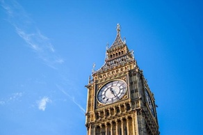
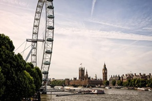

Официальный портал Лондона https://www.london.gov.uk
Путеводитель по Лондону https://planetofhotels.com/guide/ru/velikobritaniya/london
Лондонский тауэр https://tisamsebegid.ru/london/tower
Мэншн-хаус https://en.wikipedia.org/wiki/Mansion_House,_London
Лондон — столица Англии и Великобритании. Это третий крупнейший город во всей Европе. До 1997 года Лондон был столицей Британской Империи, просуществовавшей ровно три столетия и оказавшей экономическое и культурное влияние на множество современных развитых стран.
На 2021 год численность населения города Лондон, Великобритания – 8 173 939 составляет человек.
Лондон занимает площадь около 1580 км². Лондон располагается на нулевом меридиане, который также часто называют гринвичским (по названию Гринвичской обсерватории, которая принята за точку отсчёта долготы).
Историческая справка https://wideopenroad.ru/evropa/velikobritaniya/istoriya-londona.html
Фотогалерея Лондона https://wikiway.com/velikobritaniya/london/photo
Биг-Бен (Big Ben) Мало что ассоциируется с Лондоном больше, чем эта огромная башня высотой в 97 метров, увенчанная гигантскими часами и звучным колоколом, который, собственно, и называется большим Беном. Размеры Бена действительно внушительны, а его вес превышает 13 тонн. Звук этого колокола известен по всему миру как позывные радио BBC. Особенно хороша башня ночью, в свете всех четырех циферблатов, которые освещают ее с каждой стороны. Прямо возле Биг-Бена, растянувшись вдоль берега Темзы, находится здание британского парламента — Вестминстерский дворец. Взобраться на Биг-Бен у вас пока не получится, но зато вы можете приобрести экскурсию по зданию парламента и увидеть настоящие политические дебаты. Также рассмотрите вариант экскурсии по всем основным достопримечательностям Лондона
«Лондонский глаз» (Londo Eye) Колесо обозрения «Лондонскийглаз» — одна из самых новыхдостопримечательностей города,однако, она уже успела полюбитьсяжителям и туристам. Более того,наряду с более старинными достопримечательностями британской столицы «Лондонский глаз» считается культовым символом города. Колесо обозрения было построено в 2000 году, чтобы отметить наступление нового тысячелетия. Сегодня трудно представить Лондон без этого впечатляющего аттракциона. Кабинки колеса обозрения сделаны из стекла таким образом, чтобы у смельчаков, отважившихся прокатиться на нем, была возможность обозревать город со всех сторон. Перед посадкой всех гостей развлекают коротким фильмом в 4D.
Видео про Лондон https://www.youtube.com/watch?v=1a5Xh_st8_Q
Виды Лондона https://www.youtube.com/watch?v=P8zQq-R1g4Y&t=3s